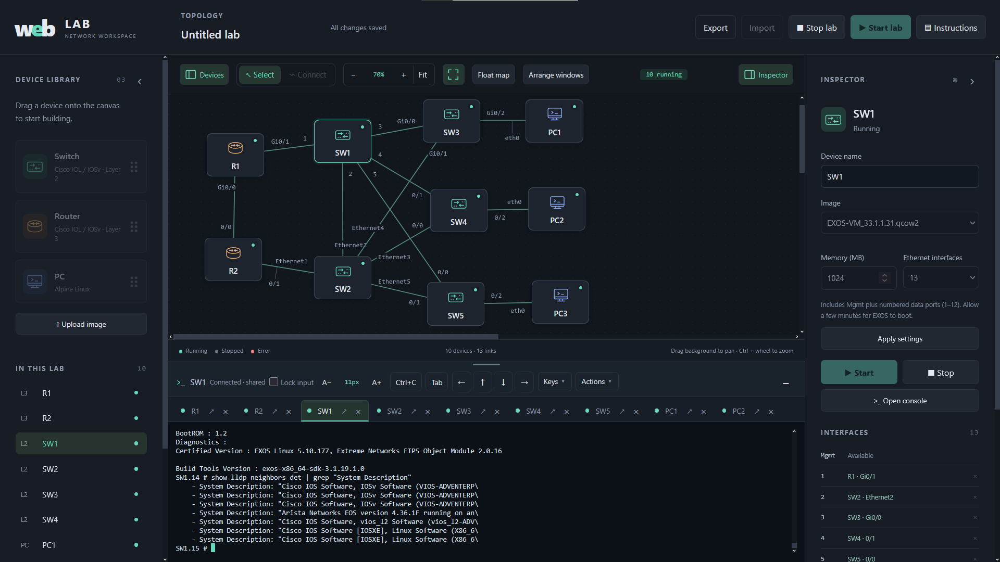
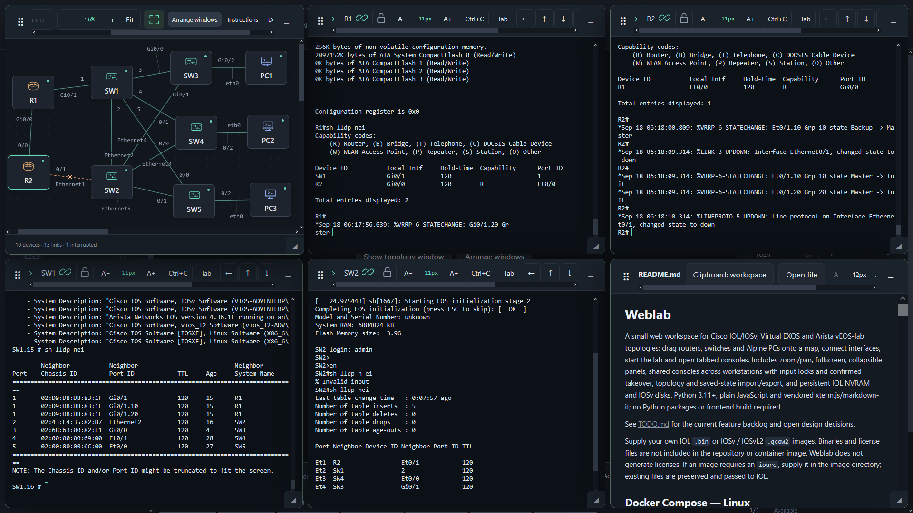
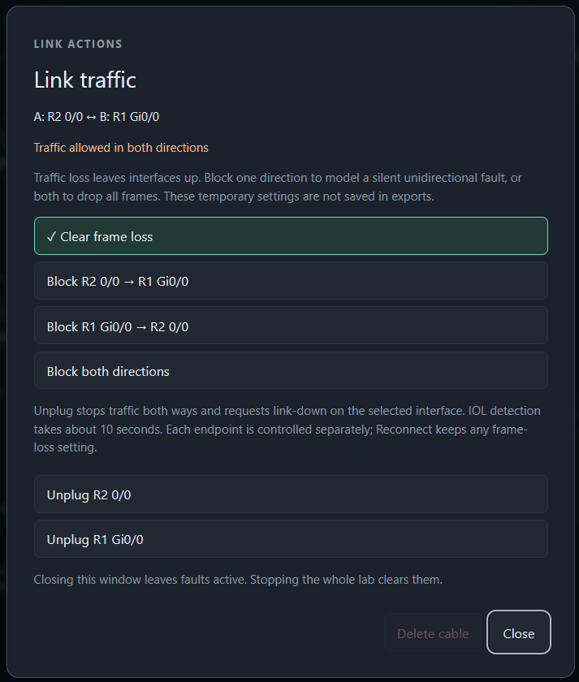
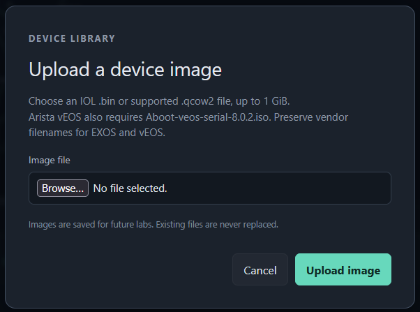

Make room for the whole lab.
Float, resize and arrange the topology, consoles and instructions. Keep consoles in tabs or open them side by side. Go fullscreen when it’s time to focus.
Explore the workspace ↗OPEN SOURCE. SELF-HOSTED. YOUR LAB.
Build a topology. Open your consoles. Follow the exercise.
Keep your focus in one browser workspace.
Runs on your Linux host. Works from your desktop or tablet.

View full size ↗BRING YOUR OWN IMAGES
LESS WINDOW SWITCHING. MORE NETWORKING.
From your first VLAN to a multi-vendor troubleshooting lab, keep the tools you need within reach.
Float, resize and arrange the topology, consoles and instructions. Keep consoles in tabs or open them side by side. Go fullscreen when it’s time to focus.
Explore the workspace ↗View the same device console from multiple workstations. Input locks and confirmed takeover keep typing coordinated. On a tablet, Ctrl+C, Tab and arrow keys are within reach.
Meet the console tools ↗Open Markdown or text instructions in a floating window. Copy commands into a console and work through the lab without leaving the page.
Read about instructions ↗
View full size ↗BREAK IT. UNDERSTAND IT. FIX IT.
Block traffic in one direction or both while a lab is running. Model a silent link failure, watch a protocol converge, and restore traffic when you’re ready.
For supported IOSv and IOL profiles, cable controls also request a link-down state at the selected endpoint.
Explore link failure controlsFrame loss and carrier state are separate controls, so you can practice different kinds of failure.

YOUR IMAGES. YOUR TOPOLOGIES.
Upload supported device images, connect the interfaces and start your lab. Mix device families in the same topology to explore how they work together.
Share a topology as JSON, seed fresh Cisco devices with initial configurations, or export a stopped lab’s saved device storage as a ZIP.
Find the right export for your labDevice images and required licenses are supplied by you. Save device configurations before stopping; Alpine PC filesystems are temporary.

FROM SOURCE TO YOUR FIRST LAB
Use an x86-64 Linux host or VM with rootful Docker and Compose. Enable KVM for QEMU devices.
Follow the installation guide for Docker, host permissions and remote access.
Installation guide ↗Supply your images, then build a topology or import the starter example.
Try the starter lab ↗Practice routing, switching and failure scenarios. Save your work and share an exercise.
Explore an OSPF exercise ↗git clone https://github.com/weblab-network/weblab.gitDesigned for your own host or a trusted group. Weblab currently has no authentication or per-user isolation; keep the lab service on a trusted network or behind an SSH tunnel.
BUILT TO BE SHARED
Free, open-source tools for hands-on networking.
Try a lab, report an issue, or help improve the project.